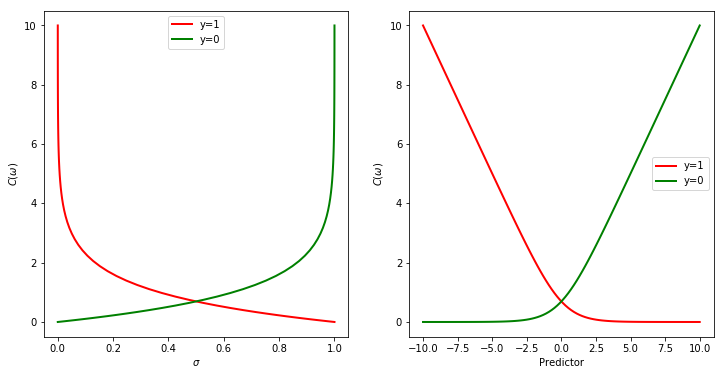

replace media/ to /blog/logreg/logreg1/
1. Problem formulation
We want to create a simplified representation (model) of real/world from available data. The model architecture can be seen as a box that takes some quantities as input, performs some internal computation and returns some other quantities as output. The inputs are also referred to as features or predictors of the problem to solve, since they contain valuable information that the model should exploit to come up with the correct outcome. In this post-series, we are going to study the very basic modelling for classification problems, the logistic regression.
I shortly summarize the main difference between a classification and regression problem: 1. Classification: the output is a discrete variable that can assume integer values within a predefined limited set, where the set dimension is the number of classes. Some examples are spam detection, object recognition and topic identification. 2. Regression: the output is a continuous variable that can assume real values. Some examples are house price prediction, electricity price estimation and Flight delay forecast.
The classification problem can also be split into three sub-categories.
If the number of classes is two, it is a binary classification problem, where the outcome can belong to either one class or the other one. One example is spam detection, where the outcome can belong to either the spam class or the ham.
If more than two classes are present, it is a multinomial (or multi-class) classification problem. Some examples are object recognition, where the outcome gives the probability that the input (an image) contains a specific object which the model has been trained for, topic identification, where the model selects the topic of the input text within a defined list. If the classes of the dependent variable are ordered, we deal with Ordinal classification problem. One example is movie rating, where the output assumes discrete values ranging from 1 to 5.
Here follows the post-series steps:
1. Probabilistic model of classification problem and cross-entropy definition via maximum likelihood (Part 1).
2. Logistic regression developed from scratch with Python and Numpy (Part 2).
3. Logistic regression implementation in Scikit-learn and TensorFlow (Part 3).
4. Multivariate logistic regression algorithm with non-linear predictors in Scikit-learn (Part 4).
5. Multinomial logistic regression with Scikit-learn, where both softmax function and one-vs-all method are applied and compared (Part 5).
6. Multinomial logistic regression with categorical inputs in Scikit-learn (Part 6).
7. Logistic regression in Scikit-learn for the digits dataset (Part 7).
8. Logistic regression in Scikit-learn for the MNIST dataset (Part 8).
2. The hello-world case for Machine Learning classifier
The problem we are going to study and analyze in this post is the very introductive example of the Machine Learning algorithm field, alongside linear regression. I would say it is the Hello world case to build a Machine learning-based classifier. This is a very critical step before diving into a more complex structure such as neural networks. Most of the time, the model that we want to study, implement and analyse in this post is stacked at the very end of any neural network you might use for classification tasks.
Please refer to this post for further details about the overall model structure for a machine-learning framework. In general, we need to define the model structure to reduce the searching space to the machine. We need a loss function to say the machine how well/bad it is performing within the assigned task. We guide the machine at changing its parameters with a recipe, the learning algorithm.
2.1 Applications
Classification tasks are very common in various fields, such as: 1. health and care: predicting mortality in injured patients, predicting the risk of developing a given disease based on observed features of the patient, predicting whether some DNA mutations are disease-causing or not based on DNA sequence data. 2. politics: predicting election voting for a party based on specific characteristics of the voter. 3. engineering: predicting the probability of failure of a given process or system. 4. marketing: predicting how a customer/subscriber is likely to purchase a product/stop a subscription. 5. finance: predicting the likelihood of a homeowner to default on a mortgage, whether or not a transaction being performed on an online banking service’s site is fraudulent.
3. Probabilistic model
In this post, we want to focus on the binary classification problem, where the outcome can assume only two values, 0 or 1. We explain why and then show how linear regression fails at handling this classification case.
3.1 Why not linear regression
Intuitively, a simple linear regression model would take values larger than 1 or smaller than 0, making them hard to interpret as probabilities. One could saturate the linear model to the lower and upper bounds of 0 and 1, respectively, as follows:
$$ \pi = max(0, min(1, \omega^T\cdot x)) $$
This would introduce some challenges to effectively train the model with gradient descent since the gradient information would vanish any time the linear model exceeds the unit interval. If the gradient becomes 0, the learning algorithm struggles to improve the model performance due to the lack of any guidance for adjusting the parameters.
If the model outcome can assume one of more than two classes, the situation is even worse, since any coding chosen to embed the outcome classes implies an order on the outcomes and leads the linear regression to capture strange quantitative correlation. Let the input be an image to classify within three classes: 1) dog, 2) cat and 3) bird. The difference between dog and cat is the same as the difference between cat and bird, and it is as half as the difference between dog and bird. However, there is no particular reason for this to happen.
Since the dependent variable of the model can belong to one of the categories of a fixed set, we assume the binary response y is a realization of a Bernoulli trial, rather than a continuous outcome, as it would be with a linear regression model. This implies that the residuals cannot be normally distributed, which is a necessary condition for the linear regression model.
Moreover, the distribution of the model output, Y, is a Bernoulli distribution:
$$ P(Y=y) = \pi^{y}\cdot (1-\pi)^{1-y} $$
where y is either equal to 1 or 0 and $\pi$ is the probability of the output of being equal to 1. In fact, both the mean, or expected value, and the variance of this distribution depend upon the probability, $\pi$:
$$ E(Y) = \mu = \pi $$
$$ var(Y) = \sigma^2 = \pi\cdot (1-\pi) $$
This implies that a linear model is not suitable for this case since it assumes that the variance is constant. We will see that the introduction of the sigmoid function is fundamental to capture the variance correlation with the underlying probability, $\pi$. Indeed, its derivative has the same shape as the variance of the Bernoulli distribution.
3.2 Towards the logistic regression model
Since the linear probabilistic model $\pi = \omega^T\cdot x$ lacks domain coherence (the LHS term ranges from 0 to 1, while the RHS term can take any real value), a simple solution would be to transform the probability into a new intermediate variable which is model as a linear function of the input. We introduce the odds of an event as the ratio of the probability and its complement, or the ratio of favourable to unfavourable cases:
$$ odds = \frac{\pi}{1-\pi} $$
Odds are traditionally used instead of probabilities in horse-racing, since
they relate more naturally to the correct betting strategy.
In fact, odds of 1:k should imply a payoff of k for a stake of 1, in a fair game.
It means that if you have a 20% chance of winning a bet ($\pi = 0.2 $), the odds are 1:4, you should get a payoff of 4 for a stake of 1, which is in equilibrium in a long term perspective.
You will, in fact, win 4 dollars (assuming the currency is dollar) only 1 out 5 times of betting, but you will lose one dollar 4 out 5 times.
However, we still need a step to get a variable whose domain matches the real domain of the input, i.e., the predictors. We, therefore, introduce the logarithm of the odds, which is also referred to as logit, and
$$ logit(\pi) = \log {\frac {\pi}{1-\pi}} $$
Even though the model output is a Bernoulli-distributed variable, the logit varies on the entire real domain. Positive/negative logits represent probabilities above/below 50%.
It is now possible to assume that the logit of the success probability, $\pi$, is described by a linear model of the predictors:
$$ logit(\pi) = \omega^T\cdot x $$
where $x$ is a vector of predictors and $\omega$ is a vector of the regression coefficients.
The change in the predicted log-odds of success probability equals $\omega_j$ for a unit change in the j-th predictor when all other predictors are kept constant. If we exponentiate the logit expression, we get the direct correlation between probability and predictors:
$$ odds = \frac {\pi}{1-\pi} = e^{\omega^T\cdot x} $$
It is now easy to determine the impact of a regression coefficient to the odds. If we increase the j-th predictor by a unit, the odds becomes:
$$ odds = e^{\omega^T\cdot x + \omega_j} = e^{\omega^T\cdot x}\cdot e^{\omega_j} $$
$$ \rightarrow = odds_0 \cdot e^{\omega_j} $$
The exponential factor $e^{\omega_j}$ represents the odds ratio.
We need to invert the logit function to have a direct expression of the probability of the model outcome of being 1, or interchangeably belonging to the second class.
The inverse function of the logit is the logistic function, which is a sigmoid function. It is interpreted as taking input log-odds and returning the estimated probability.
We first set the log-odds to be equal to the intermediate variable, t, that was introduced above. This intermediate variable is described with a linear model of multiple explanatory variables (predictors).
$$ logit(\pi) = t = \log {\frac {\pi}{1-\pi}} $$
$$ e^t = \frac {\pi}{1-\pi} \Rightarrow (1-\pi)\cdot e^t = \pi $$
$$ \Rightarrow (1+e^t)\cdot\pi = e^t $$
$$ \Rightarrow \pi = \frac{e^t}{(1+e^t)} = \frac{1}{(1+e^{-t})} = \sigma(t) $$
The probability of success is related to the linear model of the predictors via the non-linear sigmoid function, which takes the entire real domain of the predictors and squashes to the (0, 1) probability domain. The final formulation, which represents the logistic regression model, is therefore as follows:
$$ P(y=1|x; \omega) = \pi = \sigma(\omega^T\cdot x) $$
A nice property of the $\sigma$ function is that the derivative has the same structure as the variance of the Bernoulli distribution.
$$ \frac{d \sigma(t)}{dt} = \frac{d}{dt}\frac{1}{(1+e^{-t})} = \frac{d}{dt}\frac{e^t}{(1+e^t)} $$
$$ \rightarrow = \frac{e^{t}\cdot(1+e^t)-e^{2t}}{(1+e^t)^2} = \frac{e^{t}}{(1+e^t)^2} $$
$$ \rightarrow = \frac{e^{t}}{(1+e^t)}\cdot\frac{1+e^t-e^t}{(1+e^t)} = \sigma(t)\cdot(1-\sigma(t)) $$
$$ var(B(\pi)) = \pi\cdot(1-\pi) $$
4. Loss function
The compact way to express the Bernoulli distribution for both success/fail (1/0) cases is also used to model the probability function:
$$ P(Y=y | x; \omega) = \pi^{y}\cdot (1-\pi)^{1-y} = $$
$$ \rightarrow (\sigma(\omega^T\cdot x))^{y}\cdot (1-\sigma(\omega^T\cdot x))^{1-y} $$
Assuming that the training examples were generated independently, we can then write down the likelihood of the parameters as
$$ L(\omega) = \prod_i{P(Y=y_i | x_i; \omega)} = $$
$$ \rightarrow \prod_i{(\sigma(\omega^T\cdot x_i))^{y_i}\cdot (1-\sigma(\omega^T\cdot x_i))^{1-y_i} } $$
where $x_i$ and $y_i$ are the predictors and ground-truth output of the i-th example.
We take the log-likelihood:
$$ l(\omega) = \log L(\omega) = $$
$$ \rightarrow \sum_i{(y_i\cdot\log\sigma + (1-y_i)\cdot\log(1-\sigma))} $$
which is maximized using optimization techniques such as gradient descent.
If we want to treat the task as a minimization problem of a loss function, we introduce a negative sign:
$$ C(\omega) = - l(\omega) = - \log L(\omega) $$
You can see how the cost function is neutral to a model response of 1 when the ground-truth output is 1 as well (red line), but returns an increasing penalty as the model response moves away from 1, i.e., it decreases down to 0, and exponentially reaches $+\infty$ as it tends to 0. The behaviour for the $y=0$ case is the other way around, flipped around the vertical axis $\sigma = \frac{1}{2}$.
import numpy as np
import matplotlib.pyplot as plt
%matplotlib inline
def sigmoid(xx):
return 1/(1+np.exp(-xx))
xx = np.linspace(-10, 10, 100)
sgm = sigmoid(xx)
logLH1 = -np.log(sgm)
logLH0 = -np.log(1-sgm)
plt.figure(figsize=(12, 6))
plt.subplot(1,2,1)
plt.plot(sgm, logLH1, 'r', lw=2, label='y=1')
plt.plot(sgm, logLH0, 'g', lw=2, label='y=0')
plt.xlabel('$\sigma$')
plt.ylabel('$C(\omega)$')
plt.legend()
plt.subplot(1,2,2)
plt.plot(xx, logLH1, 'r', lw=2, label='y=1')
plt.plot(xx, logLH0, 'g', lw=2, label='y=0')
plt.xlabel('Predictor')
plt.ylabel('$C(\omega)$')
plt.legend();

def lossFunLSE(XX, YY, ww):
Npnt = XX.shape[0]
J = np.sum((sigmoid(np.dot(XX, ww)) - YY)**2, axis=0)/2/Npnt
return J
def lossFunML(XX, YY, ww):
Npnt = XX.shape[0]
hh = sigmoid(np.dot(XX, ww))
J = np.sum(YY*np.log(hh) + (1-YY)*np.log(1-hh), axis=0)/Npnt
return J
5. Gradient descent algorithm
5.1 Gradient of the Least-Squares-Error function
We calculate the gradient of the LSE loss function with respect to the model parameters, as follows:
$$ \frac{\partial L_{lse}(\omega)}{\partial\omega_j} = (\frac{1}{2}\cdot 2\cdot(y-h)\cdot\frac{\partial\sigma(\omega^T\cdot x)}{\partial\omega_j} ) = $$
$$ \rightarrow ((y-h)\cdot h\cdot(1-h)\frac{\partial(\omega^T\cdot x)}{\partial\omega_j} ) $$
$$ \rightarrow ((y-h)\cdot h\cdot(1-h)\cdot x_j ) $$
This gives us the stochastic gradient ascent rule
$$ h^{(i)} = \sigma(\omega^T\cdot x^{(i)}) \quad $$
$$ \omega_j = \omega_j - \alpha\cdot( (y^{(i)}-h)\cdot h\cdot(1-h)\cdot x_j^{(i)} ) $$
where $x_j^{(i)}$ is the j-th element of i-th predictor and $y^{(i)}$ is the corresponding ground-truth binary output. Note the negative sign in the update formula, since we are minimizing the loss function.
def gradDescLSE(XX, YY, ww, lr=0.1, Nepoch=1500):
Npnt = XX.shape[0]
Jevol, wevol = [], []
for _ in range(Nepoch):
Jevol.append(lossFunLSE(XX, YY, ww))
wevol.append(ww[:,0])
hh = sigmoid(np.dot(XX, ww))
ww = ww - lr/Npnt * np.sum((hh - YY) * hh * (1-hh) * XX, axis=0).reshape(-1,1)
return np.array(wevol), np.array(Jevol)
5.2 Gradient of the maximum-likelihood function
We calculate the gradient of the ML loss function with respect to the model parameters, as follows:
$$ \frac{\partial L_{ml}(\omega)}{\partial\omega_j} = (\frac{y}{h} - \frac{1-y}{1-h})\frac{\partial\sigma(\omega^T\cdot x)}{\partial\omega_j} ) = $$
$$ \rightarrow (\frac{y}{h} - \frac{1-y}{1-h})\cdot h\cdot(1-h)\cdot\frac{\partial(\omega^T\cdot x)}{\partial\omega_j} ) $$
$$ \rightarrow (y\cdot (1-h) - (1-y)\cdot h)\cdot x_j ) = $$
$$ \rightarrow (y - y\cdot h - h + y\cdot h)\cdot x_j ) $$
$$ \rightarrow (y-h)\cdot x_j ) $$
This gives us the stochastic gradient ascent rule
$$ \omega_j = \omega_j + \alpha\cdot(y^{(i)} - \sigma(\omega^T\cdot x^{(i)}))\cdot x_j^{(i)} $$
where $x_j^{(i)}$ is the j-th element of i-th predictor and $y^{(i)}$ is the corresponding ground-truth binary output.
Note the positive sign in the update formula, since we are maximizing the ML function.
def gradDescML(XX, YY, ww, lr=0.1, Nepoch=1500):
Npnt = XX.shape[0]
Jevol, wevol = [], []
for _ in range(Nepoch):
Jevol.append(lossFunML(XX, YY, ww))
wevol.append(ww[:,0])
hh = sigmoid(np.dot(XX, ww))
ww = ww - lr/Npnt * np.sum((hh - YY) * XX, axis=0).reshape(-1,1)
return np.array(wevol), np.array(Jevol)
Reference
- CS229 notes
- Machine Learning at Coursera
- Maximum likelihood estimators and least squares
- An Introduction to Statistical Learning
- Generating artificial data
- Logistic Regression overview
- Logistic Regression for Machine learning
- Princeton notes
- Building A Logistic Regression in Python, Step by Step
- Logistic Regression using Python (scikit-learn)